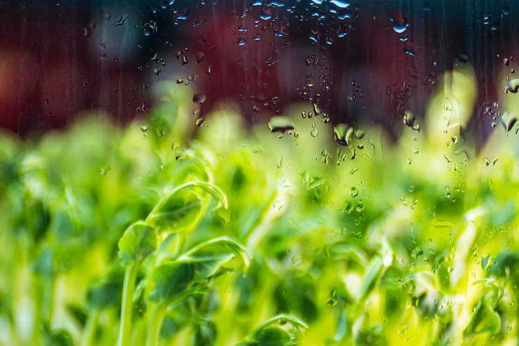
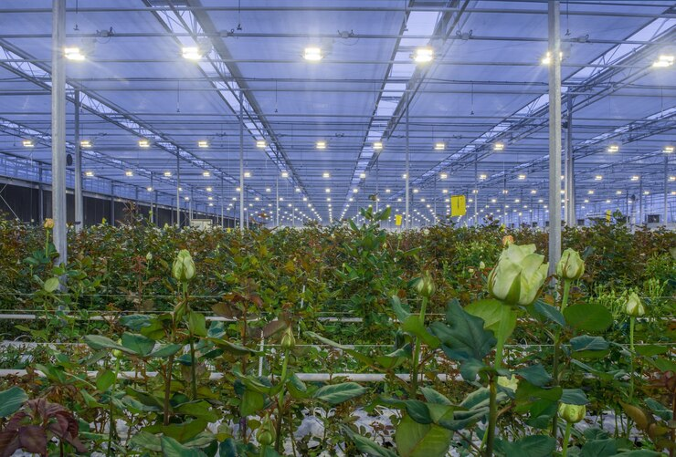
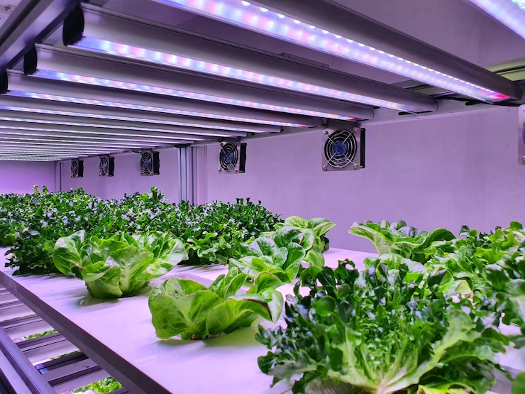
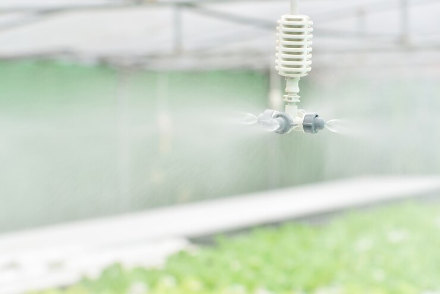

Our Service
About content controls
 Nhiệt độ
Nhiệt độ
 Độ ẩm
Độ ẩm
 Ánh sáng
Ánh sáng
 Quạt thông gió
Quạt thông gió
 Nước
Nước
-
Nhiệt độ
Điều kiện khí hậu canh tác trong nhà lưới có sự khác biệt so với môi trường bên ngoài (thường thì cao hơn khoảng 1- 20C).
Khi nhiệt độ trong nhà lưới tăng hơn bên ngoài sẽ bất lợi cho rau màu, có thể gây nên hiện tượng héo do thoát hết hơi nước ở lá. Vì thế nên áp dụng phương pháp phun sương tự động để khắc phục tình trạng này, đặc biệt khi rau mới đem từ vườn ươm ra trồng trong nhà lưới.
Việc trồng rau sạch trong nhà lưới giúp điều hòa nhiệt độ: Nhà kính trồng rau giúp duy trì sự ổn định về nhiệt độ bên trong khi khí hậu thay đổi. Cụ thể là nhiệt độ sẽ trở nên mát mẻ khi vào mùa nóng và ấm áp khi vào mùa lạnh. Do đó bạn hoàn toàn có thể chủ động trong việc trồng trọt và chăm sóc rau. -
Độ ẩm
Độ ẩm đất và độ ẩm không khí, cả 2 loại này đều cần thiết cho sự sinh trưởng và phát triển của cây thuốc. Cần chú ý đến lượng mưa và sự phân bố mưa trong năm. Nếu thiếu ẩm mặt đất và cây trồng đều tăng cường thoát hơi nước dẫn đến cây bị khô héo cằn cỗi. Tuy nhiên ở từng thời kỳ sinh trưởng cây thuốc có những yêu cầu khác nhau về độ ẩm. Lúc mới gieo trồng cây còn non yếu phải có đủ ẩm thường xuyên, nhưng khi cây ra hoa kết hạt nếu độ ẩm quá cao sẽ làm cho hoa nở ít, hạt lép. Điều kiện thời tiết khô ráo sẽ cho hoa nở đều tập trung nhiều quả, chắc hạt rất có ý nghĩa tới chất lượng các hoạt chất trong cây
 -
Ánh sáng
Ánh sáng giúp cho việc quang hợp của cây và thông qua quá trình đó mà tạo ra các chất hữu cơ, các hoạt chất trong dược liệu. Thiếu ánh sáng cây mọc chậm, yếu ớt, sinh trưởng không bình thường, lá mỏng, không ra hoa, hoặc ra hoa không đều, song nếu ánh sáng quá mạnh thì lá nhỏ, phiến lá dày, hoa cũng biến sắc.
Cường độ ánh sáng và nhu cầu ánh sáng của mỗi loài cây thuốc là khác nhau. Để tạo điều kiện thích hợp cho cây sinh trưởng và phát triển tốt phải căn cứ vào yêu cầu ánh sáng đối với cây. -
Quạt thông gió
Quạt thông gió giúp lưu thông không khí, loại bỏ sự phân tầng không khí trong nhà màng giúp cây phát triển
Quạt thông gió khiến không khí di chuyển giúp cân bằng độ ẩm và giảm trừ sự phát triển của nấm. Không khí tù đọng cho phép nấm và bệnh phát triển, sự lưu chuyển không khí một cách thích hợp sẽ cung cấp không khí trong lành, và cắt giảm dịch bệnh trong môi trường nhà màng
Khi không khí di chuyển, carbon dioxide cũng di chuyển, góp phần thúc đẩy tăng trưởng trên cây. Giúp cây tăng khả năng thụ phấn cao hơn. -
Nước
Nước là một trong những yếu tố quan trọng Việc tưới nước: Tùy theo loại cây trồng người dân có thể lựa chọn có phương pháp tưới phù hợp như tưới nhỏ giọt, tưới phun mưa hoặc hệ thống tưới phun bằng béc treo trên nhà lưới.
Giúp giữ ấm cho rau: Nhà kính giúp tiết kiệm nước nhờ vào việc giữ được hơi nước hiệu quả. Đồng thời làm cho môi trường luôn ẩm ướt thuận lợi cho rau dễ dàng phát triển.
